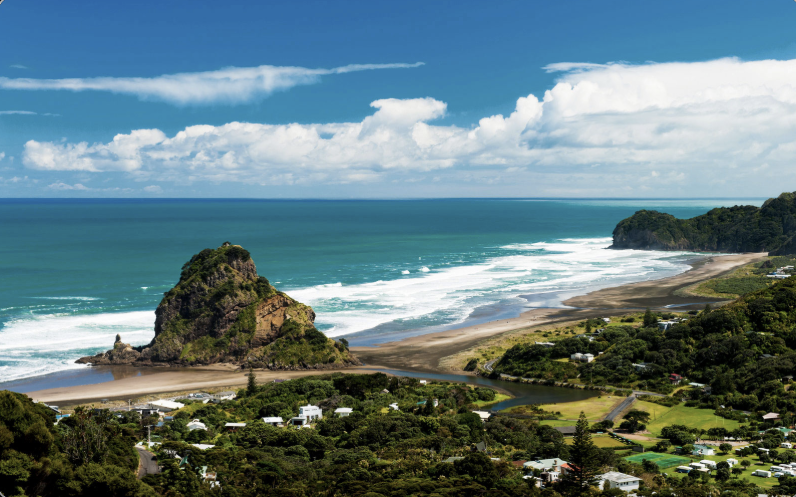

Working together through Kaitiakitanga to protect one of New Zealand's most iconic beaches.
Piha Beach is one of New Zealand's most famous west coast beaches. It is known for its black sand, Lion Rock, dramatic cliffs and powerful surf. Every year thousands of visitors enjoy everything Piha has to offer.
However, rising sea levels, storms and coastal erosion are changing the coastline. Native plants, wildlife habitats and sand dunes are all under pressure. This website explains why Piha is important, what coastal erosion is and how everyone can help protect this amazing place.
Kaitiakitanga reminds us that protecting nature today means protecting it for future generations.